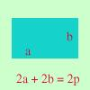

|
 Tra tutti i rettangoli di perimetro assegnato 2p determinare quello di area massima In tutti questi problemi la y e' cio' che deve essere massimo o minimo quindi area = y, l'area del rettangolo si trova moltiplicando la base per l'altezza quindi chiamiamo x o la base o l'altezza base = x ora devo esprimere anche l'altezza mediante la x; se so che tutto il perimetro e' 2p so anche che 2volte la base + 2 volte l'altezza = 2p essendo p un numero assegnato, quindi posso dire che base + altezza = p cioe' altezza = p - base altezza = p-x La mia funzione da rendere massima sara'(essendo p un numero positivo assegnato) area = base per altezza y = x(p - x) y = px - x2 Per trovare il massimo bastera' trovare la derivata prima e porla uguale a zero y ' = p - 2x p - 2x = 0 p = 2x poiche' vale la proprieta' simmetrica posso leggere l'uguaglianza da destra a sinistra 2x = p x = p/2 Ottengo il valore della y sostituendo p/2 all x nell'equazione di partenza: y = px - x2 y(p/2) = p·p/2 - (p-2)2 = = p2/2 - p2/4 = p2/4 P(p/2 , p2/4) Per sapere di che si tratta trovo la derivata seconda e la calcolo in p/2 yII = -2 yII(p/2) = -2 < 0 Si tratta di un massimo cioe' per x=p/2 l'area del rettangolo e' massima e vale p2/4. Siccome la base e' p/2 anche l'altezza e' p/2 quindi si tratta di un quadrato e si potrebbe anche dire che il quadrato e' il rettangolo di area massima Tra tutti i rettangoli di perimetro assegnato 2p quello di area massima e' il quadrato Come vedi io cerco di fare tutti i passaggi, tu naturalmente, cerca di abbreviare |